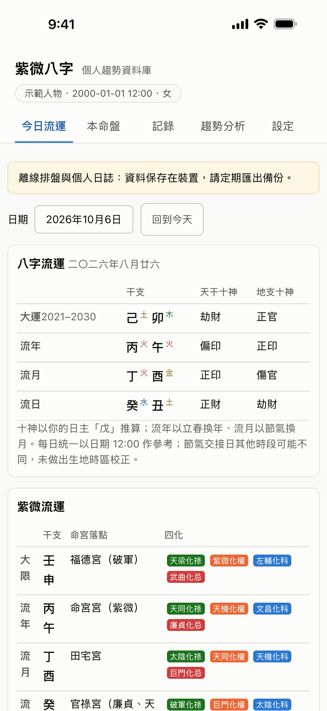
今日流運
Daily calendar information
d9f9634 歷史中文原生畫面；1019c38 英文文案待新版 iOS 重拍，不能提交 · 1320 × 2868
Ziwei Bazi Journal · 1.0 / build 1 · 合成資料示範
9f737e0 development Release 已簽名、安裝，1.0／build 1，程序啟動後2秒仍運行。1019c38通過75語言／資料／英文版面、25草稿、165中文版面及35離線檢查，以及generic unsigned simulator編譯；15打包資產雜湊符合來源，原生UI仍未驗證。本輪文件更新未重跑。distribution 上傳包尚未具備。
既有 iPhone native 截圖，來源保留於manifest；尚未反映本次UX候選。最新候選核心分頁可切換英文／繁中；傳統命盤名稱保留中文，尚未有新版iOS截圖。iPad 圖只保留前版相容模式參考。
9f737e0模擬器已完成本機Files真實roundtrip與匯入保留。206bbbb更動controller，需待協調重測鍵盤／Files；實機及其他provider驗證仍開放。
紫微八字
排盤、心情紀錄與歷史趨勢
把傳統排盤與每日狀態放在一起觀察。紀錄心情、精力與筆記，查看自己的歷史趨勢，透過 JSON／CSV 保留備份。此離線版本沒有 AI 服務或雲端同步。
農曆曆法,天干地支,五行觀察,心情日記,精力紀錄,流日曆法,資料備份
紫微八字把傳統命盤與個人日誌放在同一個地方，讓你回看自己的紀錄與曆法資訊。 • 查看紫微斗數與八字本命盤，以及選定日期的流年、流月、流日資訊。 • 每天記錄 1–5 分的心情與精力，加上狀態標籤與筆記；可編輯或刪除記錄。 • 累積至少兩筆記錄後，查看心情與精力走勢，以及依曆法欄位、狀態標籤分組的歷史平均。 • 累積至少 10 筆包含所選指標的紀錄後，流日預覽提供同類流日歷史平均的統計參考。 • 在裝置內保存資料，使用 JSON 備份與合併匯入，或透過 iOS 分享面板匯出 JSON／CSV。 此版本提供離線核心功能，沒有 AI 服務、雲端同步或登入帳號。選擇分享目的地時，該 App 或服務可能依自己的政策處理你交付的檔案。 五個核心分頁可切換英文與繁體中文；星曜、宮名、干支等細部傳統命盤術語與 CSV 欄名仍保留中文。出生時間依輸入值計算，未做出生地時區、夏令時間不存在／重複時刻判別或真太陽時校正；國際出生資訊不可直接視為已校正。流日計算以所選日期中午 12:00 為參考。 命理內容屬文化性詮釋；圖表與歷史平均預覽屬個人資料的相關性觀察，沒有經科學驗證的預測效力，也不構成醫療、心理健康或財務建議。 公開品牌：lwbro 支援信箱：lwbro@me.com
1019c38 候選的五個核心分頁可切換英文／繁中；細部傳統命盤術語與 CSV 欄名仍保留中文，候選原生 UI 尚未驗證。離線首版，無帳號或登入需求。核心曆法與排盤資源均隨 App 提供；沒有 AI 服務、雲端同步、廣告、App 內購買或自動診斷回報。 首版免費下載已由 Kurt 確認；後續商業模式僅作探索，沒有新增購買、廣告或 AI 服務。 測試步驟：設定 → 使用合成資料（2000-01-01、12:00、女；姓名可填示範人物）→ 儲存 → 本命盤。今日流運 → 選定日期 → 記錄心情／精力。建立兩筆以上記錄後可查看趨勢分析；歷史平均預覽需要至少 10 筆相應指標資料。記錄 → 匯出 JSON／CSV 使用 iOS 分享面板；匯入 JSON 使用系統 Files picker，5 MB 上限。JSON 依日期合併，較新的更新時間優先，本機已有出生資料時不覆蓋該資料。 命理內容是文化性詮釋。統計圖呈現使用者日誌的相關性，沒有預測保證；出生地時區、夏令時間不存在／重複時刻判別與真太陽時校正未實作；全球產品目標不代表全球算法已驗證。 本次首版範圍已確定為離線命盤、日誌、趨勢與備份。正式導覽只有今日流運、本命盤、記錄、趨勢分析與設定；沒有 AI、同步、登入或購買入口。AI／OAuth／同步實作與 CDN 備援未打包，網路連線由離線 CSP 阻擋。網頁版未來功能保留在原始碼。 此草稿不能直接送審：公開隱私／支援 URL、私人審查聯絡、App Store Connect 紀錄、distribution 簽名、最終聲明及 iPhone Files／實機驗證仍待完成。先前 9f737e0 開發版安裝與基本啟動成功；1019c38 只有背景檢查及 generic unsigned simulator 編譯通過，尚未完成原生 UI 驗證，不能視為送審包或完整功能驗證。 公開品牌：lwbro 支援信箱：lwbro@me.com
Ziwei Bazi Journal
Charts, moods and local backup
Explore traditional charts, record mood and energy, and keep local backups. Core screens support English and Traditional Chinese; detailed chart terms remain Chinese.
astrology,diary,energy,calendar,fiveelements,natalchart,reflection,offline,notes
Core screens support English and Traditional Chinese. Detailed traditional chart terms, including star, palace and stem/branch names, remain in Chinese. CSV column headings also remain Chinese. Ziwei Bazi Journal brings traditional Chinese charts and your personal daily notes together for reflection. • View Ziwei Doushu and Bazi natal charts, plus calendar-based information for a selected date. • Record mood and energy on a 1–5 scale, with tags and notes. Edit or delete entries as needed. • With at least two entries, view mood and energy history and grouped historical averages. • With at least 10 entries containing the selected metric, a day preview compares historical averages from similar calendar groups. • Keep data on your device. Export JSON or CSV with the iOS share sheet, and import JSON backups to merge records. Core features work offline. This version has no AI service, cloud sync, account login, or in-app purchases. A destination you select for sharing may process the file under its own policies. Birth date and time are used as entered. Birthplace time-zone conversion, DST gap/overlap handling and true-solar-time correction are not implemented. International birth data should not be treated as a corrected chart. Daily calculations use noon on the selected date. Astrological interpretations are cultural content. Charts and historical-average previews describe associations in your journal; they have no scientifically validated predictive accuracy and do not provide medical, mental-health, or financial advice. Public-facing brand: lwbro Support email: lwbro@me.com
Offline first release; no account or login is required. Calendar and chart resources are bundled. No AI service, cloud sync, ads, in-app purchases, or automatic diagnostic reporting is enabled. The 1019c38 candidate supports English and Traditional Chinese core screens using the Language control. Detailed traditional chart terms and CSV column headings remain Chinese; this update has not been installed or verified through native iOS UI. Kurt confirmed free download for the first release. Future business models remain exploratory; no purchases, ads or AI services are activated. Suggested review flow: Settings (設定) → enter fictitious data (2000-01-01, 12:00, female; optional name: Demo) → Save → Birth chart (本命盤). Daily (今日流運) → choose a date → save mood/energy. Create at least two entries for trend charts; the historical-average preview needs at least 10 entries with the selected metric. Entries (記錄) → export JSON/CSV using the iOS share sheet, or import JSON through the system Files picker (5 MB maximum). Import merges by date, prefers a newer updatedAt value, and retains an existing local birth profile. Interpretations are cultural content; journal statistics describe associations and do not promise predictive accuracy. Birthplace time-zone conversion, DST gap/overlap handling and true-solar-time correction are not implemented. The global product target is not a verified worldwide calculation capability. The first-release scope is approved: offline charts, journal, trends and backups. Navigation contains Daily, Birth chart, Entries, Trends and Settings only. There are no AI, sync, login or purchase entry points. AI/OAuth/sync implementations and CDN fallback are excluded from this native package; the offline CSP blocks connections. Future web implementations remain in source. DO NOT SUBMIT this draft yet: public privacy/support URLs, private review contact, App Store Connect record, distribution signing, final declarations, and manual iPhone Files/physical checks must be completed. The earlier 9f737e0 development build installed and launched; 1019c38 has background checks and generic unsigned simulator compilation only. Its native UI has not been verified. Neither milestone establishes an upload-ready distribution build or complete functional validation. Public-facing brand: lwbro Support email: lwbro@me.com
名稱／副標題 30 字、宣傳文字 170 字、描述 4000 字、關鍵字 100 UTF-8 bytes 已核對；字數見 欄位檢查。
合成出生資料與 21 筆示範記錄；沒有 AI 輸出。6.9 吋 iPhone 是主要尺寸。命盤左右操作與記錄卡已在大、小 iPhone 模擬器驗證；先前已拍五個離線入口；尚未重拍1019c38英文候選。下方中文原始圖不是英文素材；待拍英文標題及要求見逐張審查TXT。AI／同步不出現在正式導覽。

Daily calendar information
d9f9634 歷史中文原生畫面；1019c38 英文文案待新版 iOS 重拍，不能提交 · 1320 × 2868
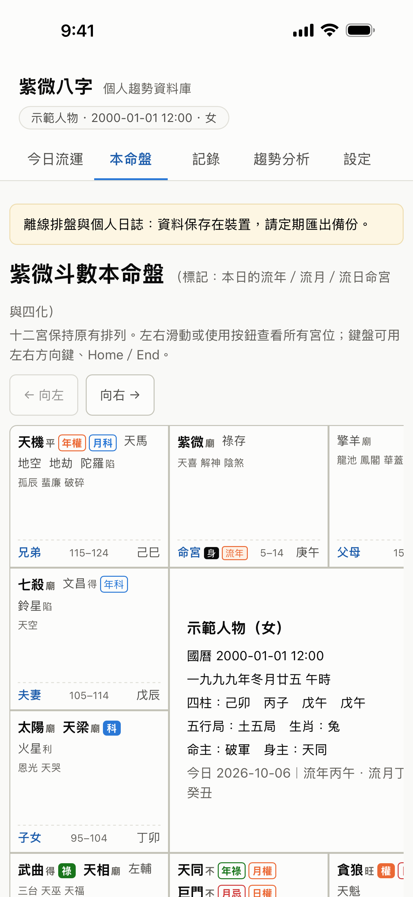
Scrollable twelve-palace chart
d9f9634 歷史中文原生畫面；1019c38 英文文案待新版 iOS 重拍，不能提交 · 1320 × 2868
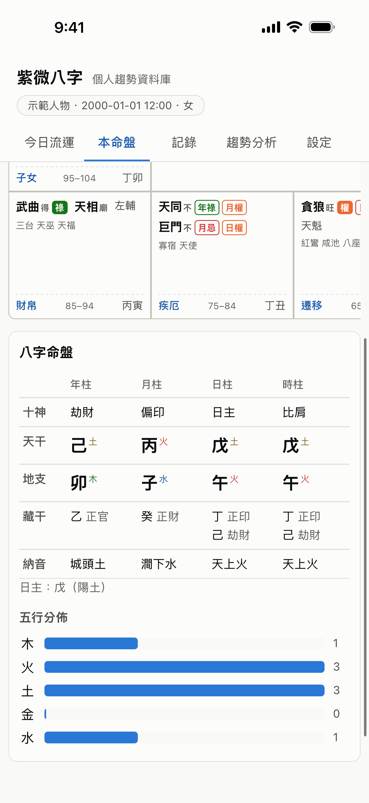
Bazi chart and five elements
d9f9634 歷史中文原生畫面；1019c38 英文文案待新版 iOS 重拍，不能提交 · 1320 × 2868
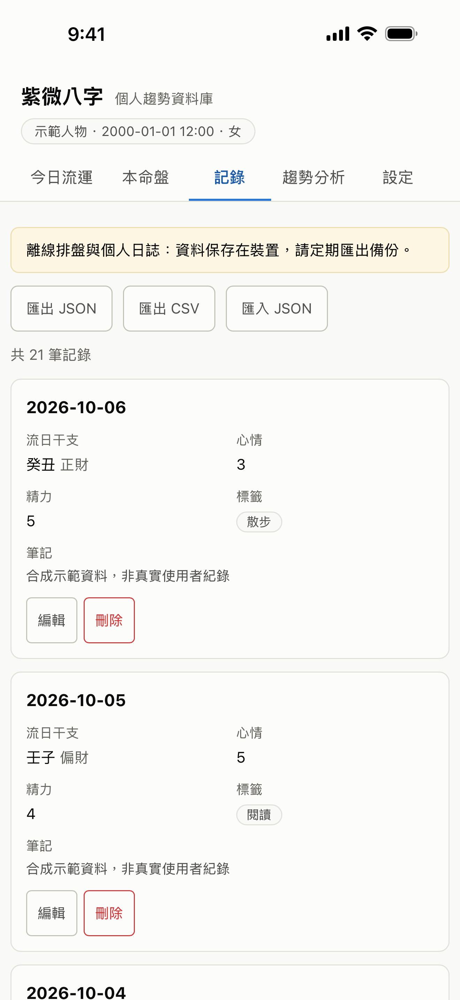
Record cards and backup controls
d9f9634 歷史中文原生畫面；1019c38 英文文案待新版 iOS 重拍，不能提交 · 1320 × 2868
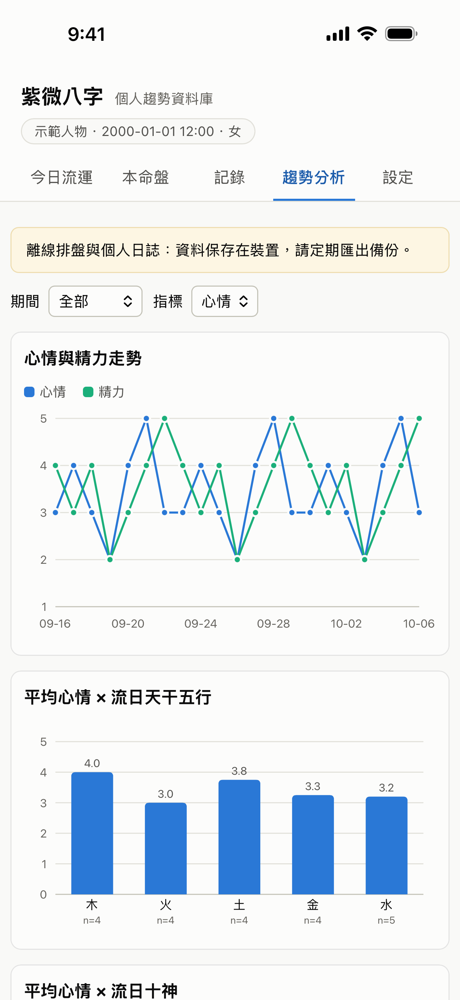
Mood and energy history
d9f9634 歷史中文原生畫面；1019c38 英文文案待新版 iOS 重拍，不能提交 · 1320 × 2868
全部截圖、尺寸、來源與 SHA256 · 逐張審查與已排除素材
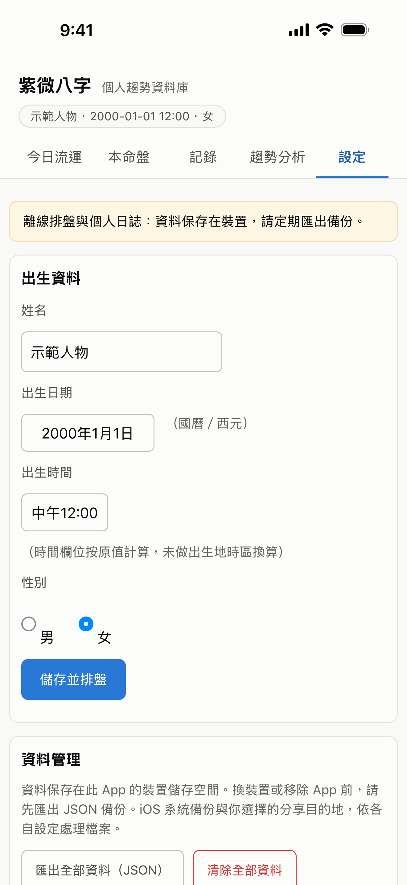
內部驗證證據；不作商店功能宣傳圖
1320 × 2868
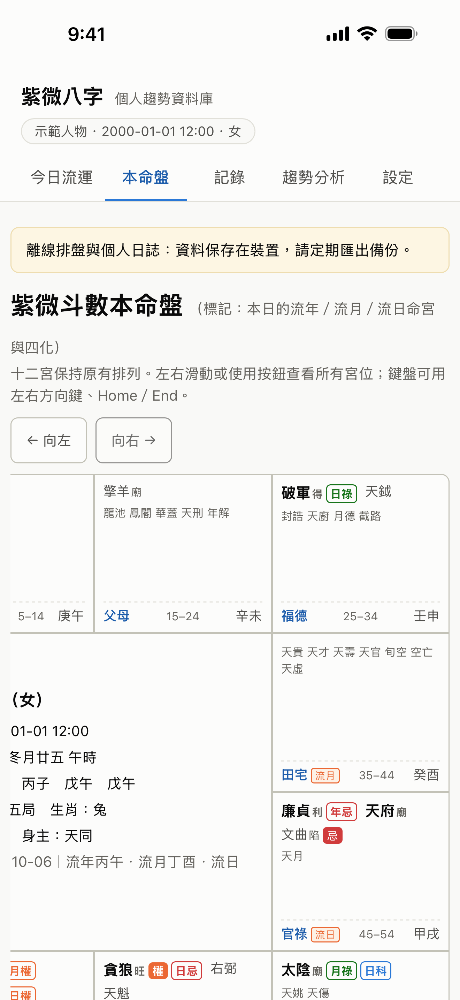
內部驗證證據；不作商店功能宣傳圖
1320 × 2868
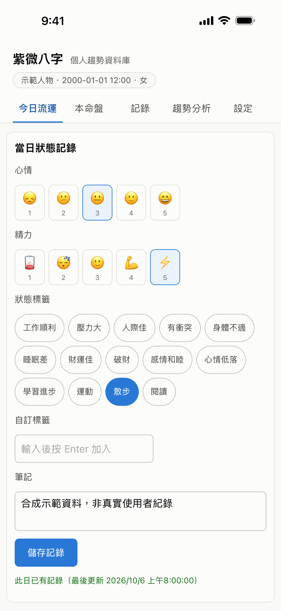
內部驗證證據；不作商店功能宣傳圖
1320 × 2868
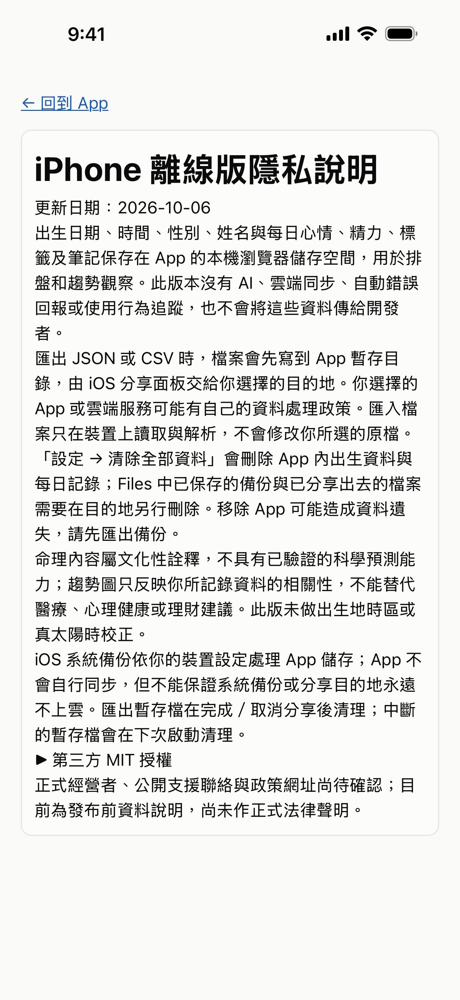
歷史安全區／本機隱私操作證據；privacy.html 聯絡文字於9f737e0更新，這張不代表目前政策或商店圖
1320 × 2868
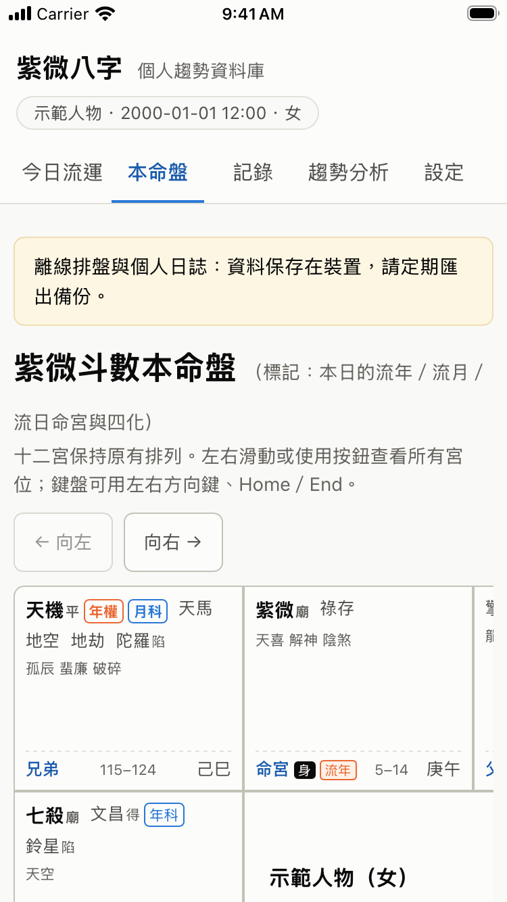
內部驗證證據；不作商店功能宣傳圖
750 × 1334
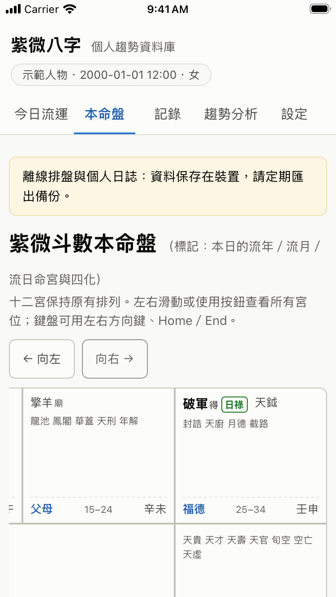
內部驗證證據；不作商店功能宣傳圖
750 × 1334
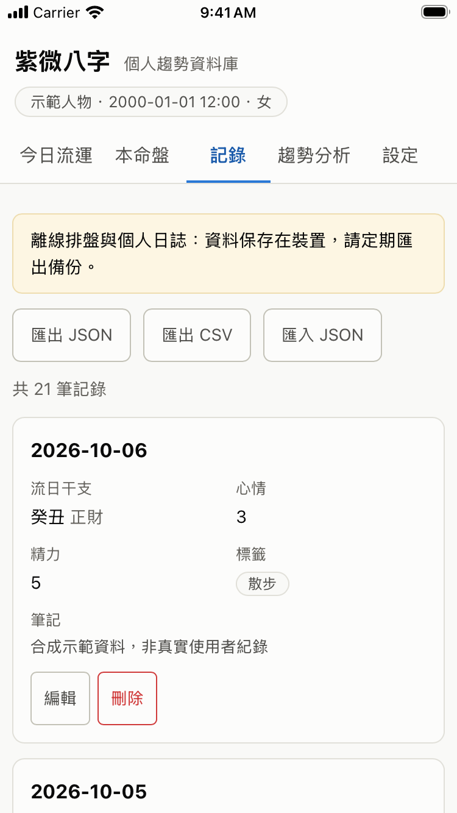
內部驗證證據；不作商店功能宣傳圖
750 × 1334
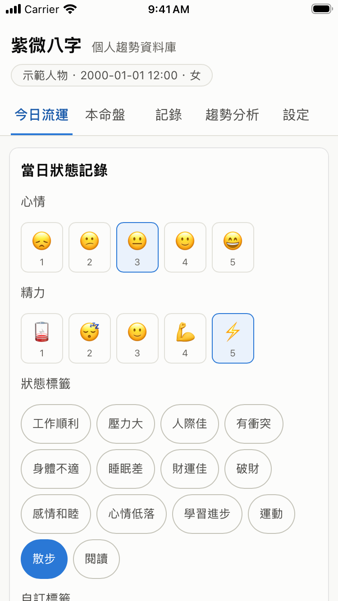
內部驗證證據；不作商店功能宣傳圖
750 × 1334
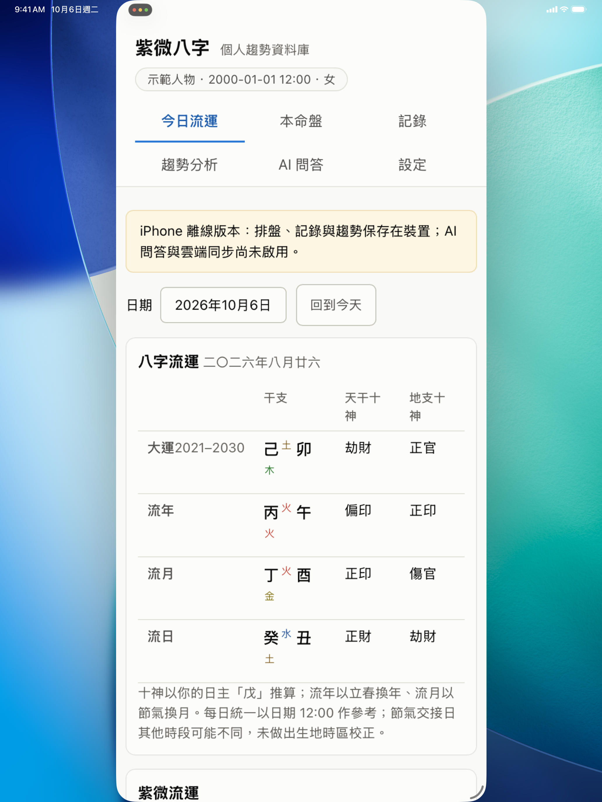
前版 0151c76 的 iPad 相容模式；沒有重拍本次版面，不作目前版本商店素材
2064 × 2752
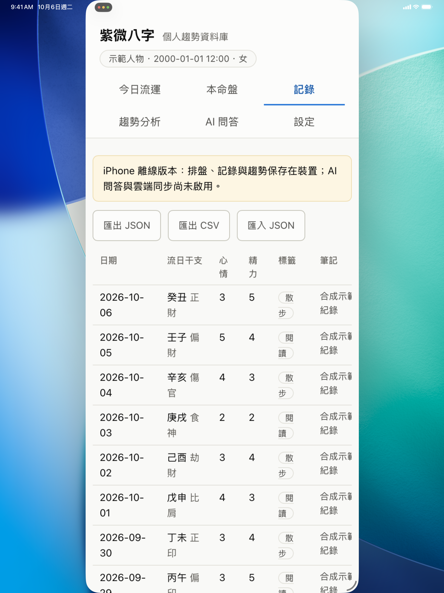
前版 0151c76 的 iPad 相容模式；沒有重拍本次版面，不作目前版本商店素材
2064 × 2752
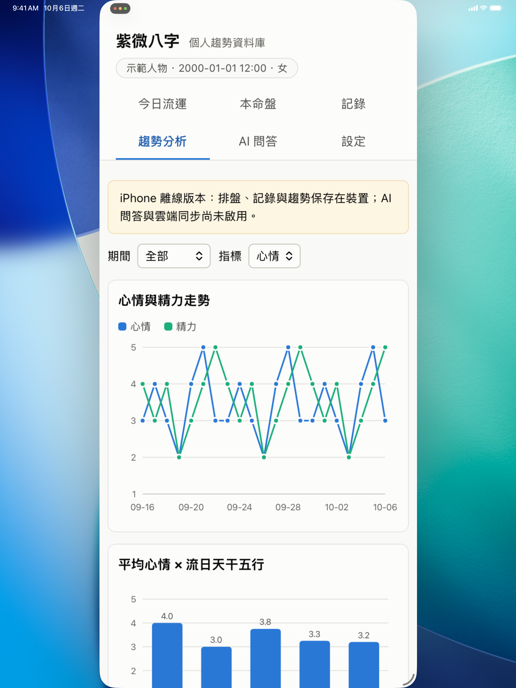
前版 0151c76 的 iPad 相容模式；沒有重拍本次版面，不作目前版本商店素材
2064 × 2752
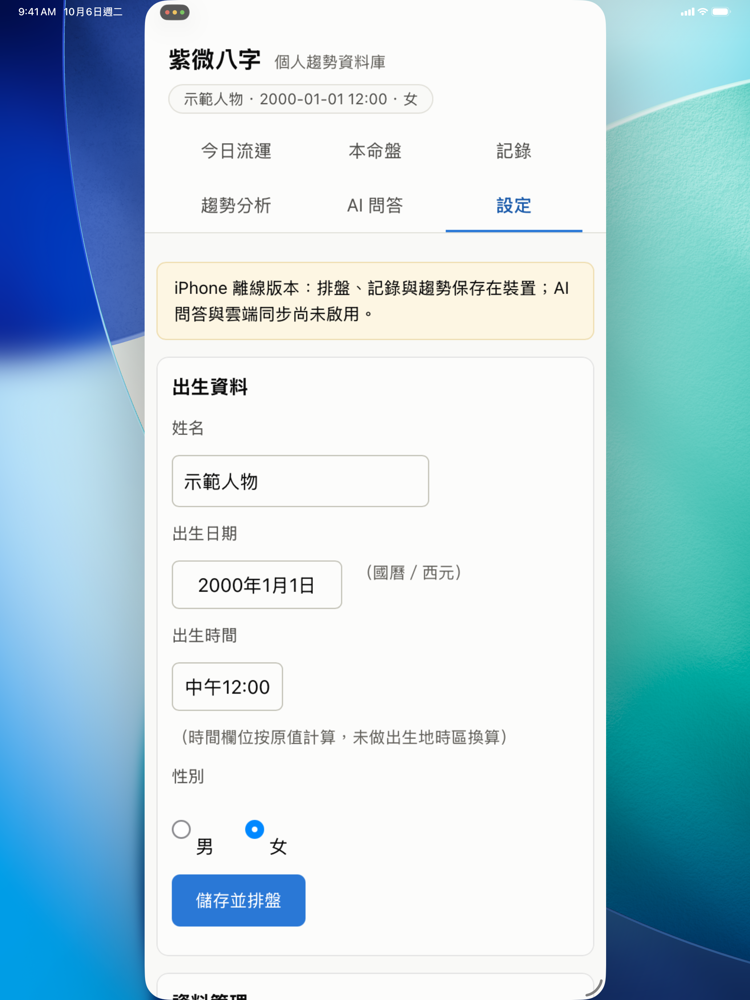
前版 0151c76 的 iPad 相容模式；沒有重拍本次版面，不作目前版本商店素材
2064 × 2752
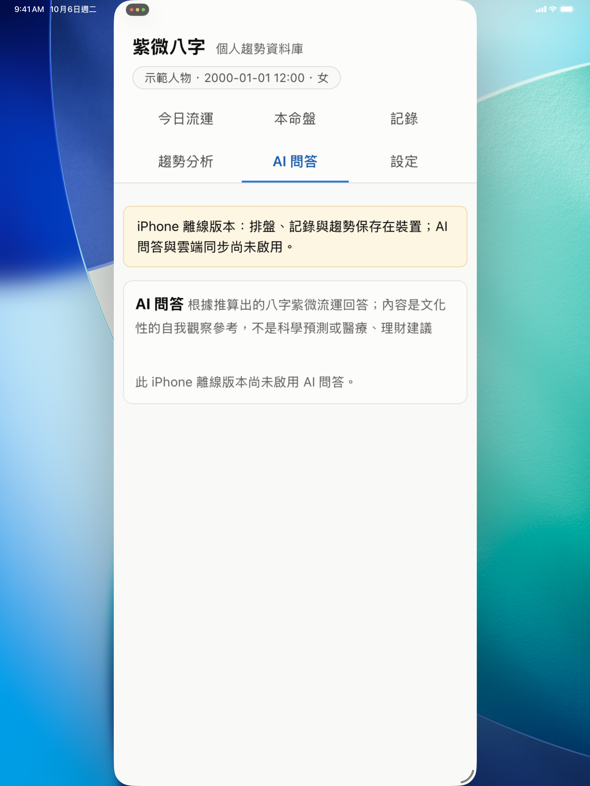
前版 0151c76 的 iPad 相容模式；沒有重拍本次版面，不作目前版本商店素材
2064 × 2752
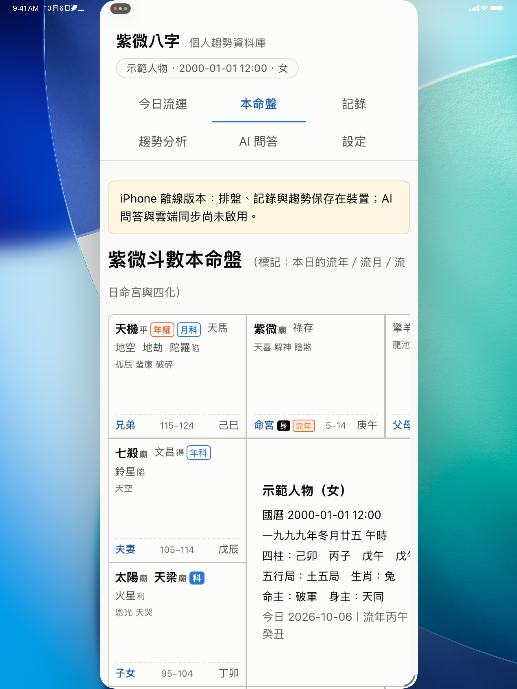
前版 0151c76 的 iPad 相容模式；沒有重拍本次版面，不作目前版本商店素材
2064 × 2752
隱私中文Privacy English支援中文Support English
這些是可 review 的本機 HTML，沒有公開 URL。公開品牌為 lwbro，支援信箱為 lwbro@me.com。法定發布者／版權姓名已確認為Kurt Chiang；Apple seller核對、完整版權文字／年份、支援訊息保留／刪除做法與生效日期仍待確認。9f737e0 已安裝開發版含先前核准的品牌／支援信箱文字，未加入本次Kurt Chiang姓名；舊 d9f9634 unsigned archive／截圖保留原始來源，內部隱私畫面不作目前政策或商店圖。
| 功能 | 資料 | 儲存／處理 | 目的地 | 使用者控制 | 本機來源 |
|---|---|---|---|---|---|
| 出生資料／排盤 | Birth profile / charts | 姓名（可選）、出生日期、時間、性別；推算命盤 | App 本機儲存；命盤運算在裝置 | 無開發者傳輸 | 設定儲存／清除出生資料；輸入時間直接計算 | js/store.js:13–26; js/engine.js; native/native-runtime.js |
| 每日記錄 | Daily journal | 日期、心情、精力、標籤、筆記、建立／更新時間 | App 本機儲存，每日一筆 | 無開發者傳輸 | 編輯、刪除單日；清除全部資料 | js/store.js:28–90; js/app.js |
| 趨勢／流日預覽 | Trends / day preview | 既有記錄與命盤欄位；分組平均、統計樣本數 | 裝置內計算及顯示；沒有額外外部資料庫 | 無外部傳輸 | 期間／心情或精力篩選；不足資料顯示提示 | js/app.js (renderTrends / renderForecast); js/charts.js |
| JSON 匯出 | JSON export | 完整出生資料、記錄及備份版本／匯出時間 | 專用暫存目錄；完成／取消後與下次啟動清理 | 只交付使用者選擇的 iOS 分享目的地 | 分享前自行檢查；可取消；目的地備份須另刪 | js/store.js:109–115; native/ios/App/App/ZiweiViewController.swift |
| CSV 匯出 | CSV export | 日誌欄位與推算的流日曆法欄位 | 專用暫存檔 | 使用者選擇的 App／Files／服務 | CSV 供檢視；App 復原使用 JSON | js/app.js (CSV export handler); js/store.js:141–148 |
| JSON 匯入 | JSON import | 使用者選定 .json；最多 5 MB；UTF-8 | 只在裝置讀取、先驗證全部、再合併寫入 | 不傳給開發者；不改來源檔 | 取消／非法檔不改資料；同日期較新者優先；storage quota 寫入失敗回復原資料 | js/store.js:119–138; native/ios/App/App/ZiweiViewController.swift |
| AI／同步／自動診斷 | AI / sync / diagnostics | 沒有服務請求、client ID、OAuth 或同步 token 操作 | 原生包只載入離線介面；不讀取網頁服務快取／憑證 | 無開發者或 AI／GitHub 服務傳輸 | AI／同步入口隱藏且 inert；離線服務介面拒絕請求；connect-src none | native/prepare.py; native/offline-services.js; native/native-runtime.js |
| 系統備份／選擇分享 | System backup / sharing | App 儲存或使用者選擇分享的檔案 | 依系統設定及使用者選定目的地 | Apple 或使用者所選目的地；各自政策適用 | 沒有宣稱所有系統備份永遠不上雲；不在 App 清除已分享檔 | native/privacy.html; system settings and chosen destination |
| 主動聯絡支援 | Voluntary support contact | 使用者自行寄出的訊息及附件 | 支援信件保存期限與刪除做法尚待確認 | lwbro 公開支援信箱 lwbro@me.com；App 不會自動寄信 | 自行決定是否寄送；避免出生資料、私人筆記及未遮蔽備份 | Approved public contact; native/store/build_review_pack.py drafts; support retention/deletion decision pending |
本表描述離線首版；App Store 隱私宣告需按最終功能、所有平台與 SDK 行為確認。
具體建議值／聲明表可審閱上架計畫 JSON下一個帳號步驟五張主截圖候選
已完成：完整記錄卡、命盤局部左右操作與鍵盤控制、分頁與編輯導航、離線服務隔離、AI／同步入口隱藏、本機備份文案與匯入失敗回復。首版範圍已確認；本次草稿保留／錯誤提示已通過背景瀏覽器檢查，原生鍵盤安全區修改只完成編譯。最近協調回報Mac鎖定／loginwindow、Glyco未持有模擬器；待解鎖並重新協調後重測1019c38語言切換、鍵盤、旋轉、隱私往返及Files；實機可及性及帳號資料尚未完成。
命理類別有 Apple 4.3(b) 差異化審查風險。可說明現有裝置內日誌、統計觀察與可攜備份用途；不能保證通過，也不能以 AI 或預測保證作為文案。隱私／支援 URL 與實際聯絡資料必須完成才可提交。